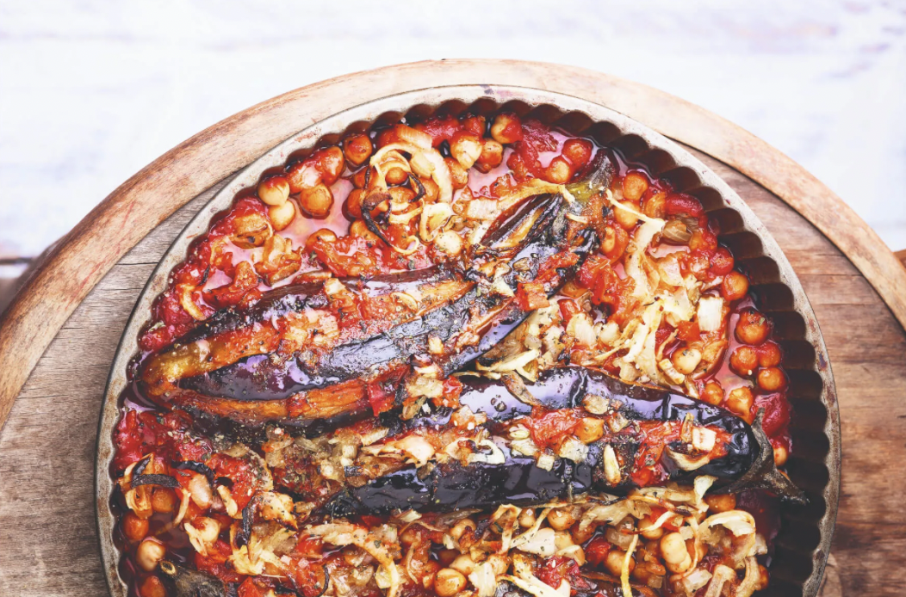
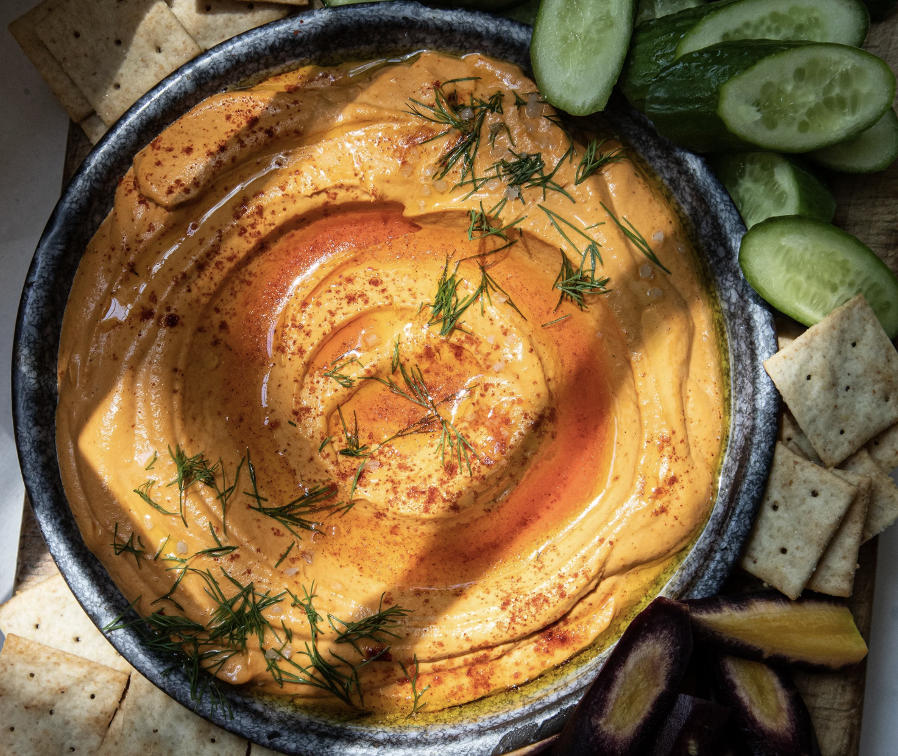
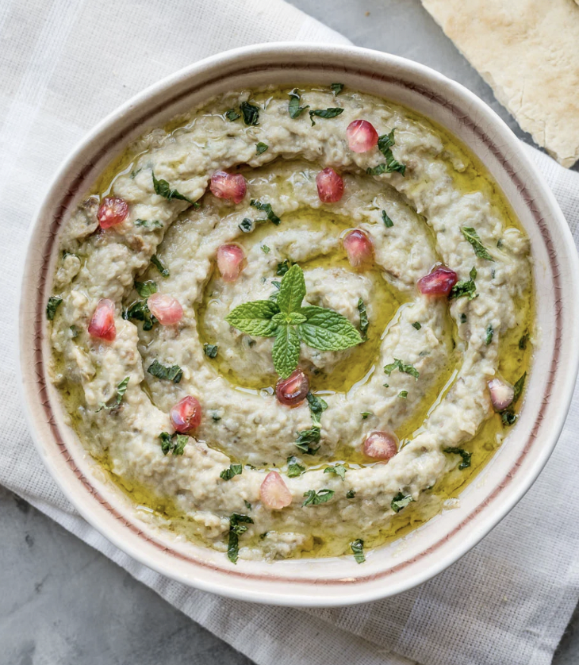
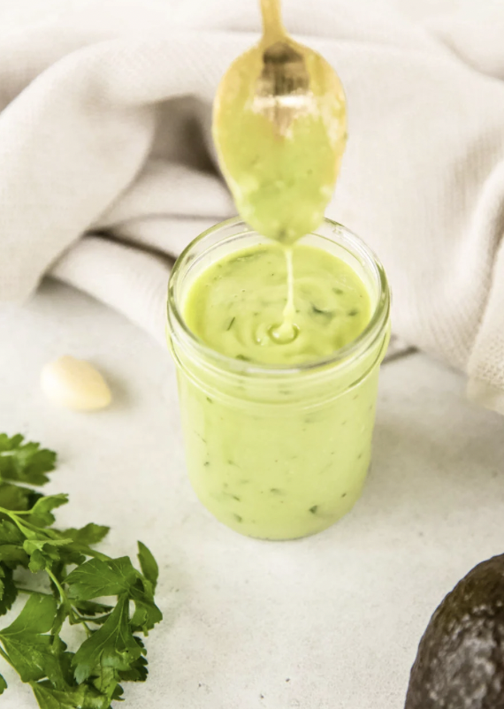

Tofu Scramble with Spinach
A fluffy tofu scramble with spinach, onion, garlic, and spices.
My personal collection of favorite dishes ♡
A fluffy tofu scramble with spinach, onion, garlic, and spices.
The best fruitsalad full of fresh and colorful fruits and mint.

Moist and delicious blueberry muffins made with chia seeds and plant-based milk.
Light, fluffy spelt pancakes made with whole spelt flour, almond milk, coconut blossom sugar, baking powder, plant-based oil, baking soda, and apple cider vinegar.

A simple and flavorful puff pastry tart with sweet cherry tomatoes, basil, shallot, garlic, and toasted pine nuts.
A fluffy tofu scramble with spinach, onion, garlic, and spices.

Sabich, a traditional Iraqi Jewish dish with roasted eggplant and hummus in warm pita bread.

Healthy stuffed peppers with quinoa, orange, and falafel, a light but filling lunch or party dish.

Creamy vegan green curry with coconut milk, fresh herbs, broccoli, peas, and asparagus.

Soft aubergine and chickpeas cooked in a rich tomato sauce with onion, garlic, and warm spices.

Sweet, salty, sour, and spicy Pad Thai with noodles, tofu, vegetables, peanuts, and a rich peanut-based sauce.

Layered pumpkin lasagne with vegetable slices, basil tomato sauce, Italian herbs, pumpkin leaves, and creamy cashew cheese sauce.

A warm and aromatic Moroccan-style vegetable tagine with chickpeas, spices, and fresh herbs.
Sabich, a traditional Iraqi Jewish dish with roasted eggplant and hummus in warm pita bread.

A creamy vegan vol‑au‑vent filling with Beyond Sausage balls, plant‑based chicken, chestnut mushrooms, parsley, and a light nutmeg‑spiced béchamel‑style sauce.

A bright, sparkling raspberry sorbet made with raspberries, sparkling wine, strawberries, mint, and something crunchy.

Immunity-boosting and awakening shots.

Enhancing overall uptake and structural function.

Spicy green detox juice packed with leafy greens, celery, tomato, and a jalapeño kick.

Immunity and vitamin boosting.

Cucumber, celery, and pineapple based detoxing and hydrating juice.

My favorite hummus recipes with variations.

Green dip recipe that is avocado based.

Red pepper dip recipe that is roasted pepper based.

Smoky roasted eggplant dip with tahini, lemon, cumin, garlic, and fresh coriander.

The best guacamole recipe ever!

Crispy oven-baked wontons filled with Jerusalem artichoke-hazelnut puree and served with spicy kimchi dipping sauce.
A simple and flavorful puff pastry tart with sweet cherry tomatoes, basil, shallot, garlic, and toasted pine nuts.

A simple and healthy dressing made with ripe avocado, rice vinegar, and olive oil.

Easiest and most delicious!

A light and balanced vinaigrette made with white wine vinegar, mustard, and oil.

A light and balanced vinaigrette made with cherry tomatoes, olive oil, and basil.

A light and balanced vinaigrette made with balsamic vinegar, mustard, and plant-based oil.

A light and balanced dressing made with mango, lime, mustard, and plant-based oil.

A light and balanced dressing made with ginger, soy sauce, sesame oil, and white wine vinegar.

An easy and tasty marinade for tofu or vegetables.

A fragrant curry paste with coriander, cumin, fresh cilantro, chili peppers, shallot, galangal, soy sauce, turmeric, lime, and lemongrass.